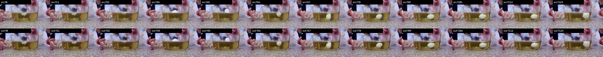
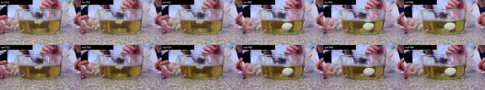
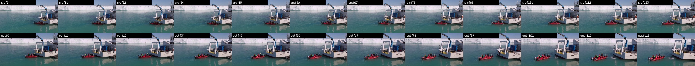
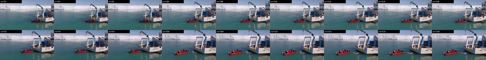
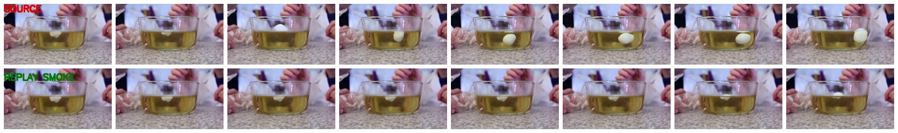
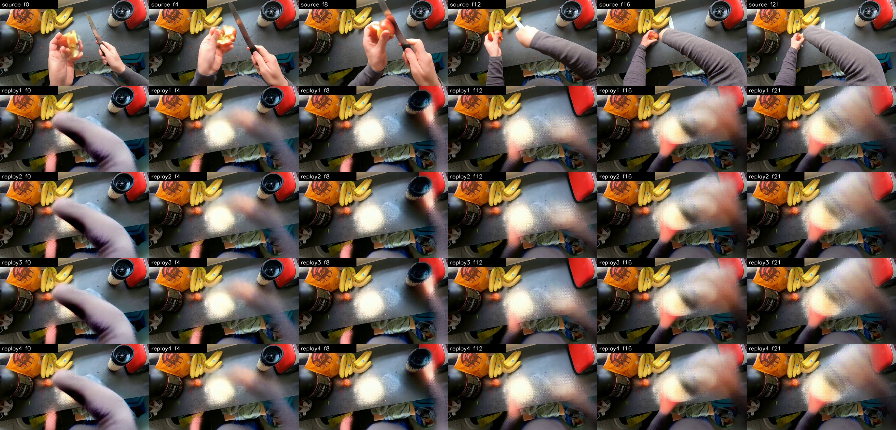

MiniMax-H3 Inference Review
Review page for the 2026-09-26 local MiniMax-H3 Ref2VA artifacts. The clean FastVideo inference samples are separated from the LoRA replay smoke outputs so the visual decision is explicit.
Clean FastVideo Ref2VA Outputs
Official local FastVideo MiniMaxH3Ref2VAModularPipeline, 50 steps, 4 H20 GPUs per sample. These are the two visually passed inference outputs from the current Physion fixing lane.
001_T1_05859 - dry ice size and buoyancy
GPT-5.5 summary: the output keeps the scene and appears to smooth the specified size/buoyancy discontinuities without major artifacts. Minor caveat: local smoothing and texture softness around underwater material.
Source video
Clean FastVideo output
Source vs output contact sheet

Target event frames

002_T1_08173 - boat passenger continuity
GPT-5.5 summary: the output preserves the harbor scene while making passenger continuity, green vest retention, and post-jump visibility more continuous. Minor caveat: distant people remain soft.
Source video
Clean FastVideo output
Source vs output contact sheet

Target event frames

Generated-Data LoRA Replay
Two-step LoRA trained on the two generated Physion fixing samples, then replayed with the generated adapter. These files validate the data-to-LoRA-to-reload path, not visual quality.
generated_replay_0
GPT-5.5: decodable and preserves the bowl scene, but the output appears nearly static with only trivial visual change. Motion is too weak to verify buoyant dry-ice behavior or the intended physical correction.
Replay video
Source vs replay sheet

generated_replay_1
GPT-5.5: decodable and scene-preserving, but effectively static with no meaningful observable motion or physical correction. It cannot demonstrate correction of the dry-ice buoyancy/size anomaly.
Replay video
Source vs replay sheet
Earlier Structural LoRA Smoke Videos
These four 22-frame files are included for traceability. They were mechanical smoke outputs from adapter reload/productive smoke runs, not training-quality evidence.
Smoke 0
Smoke 1
Smoke 2
Smoke 3
Structural smoke contact sheet

Artifacts
metadata/h3_inference_review_20260926/dryice_gpt55_visual_qc.json
metadata/h3_inference_review_20260926/boat_gpt55_visual_qc.json
metadata/h3_inference_review_20260926/generated_replay_gpt55_summary.json
metadata/h3_inference_review_20260926/generated_replay_mechanical_qc.json
metadata/h3_inference_review_20260926/structural_smoke_mechanical_qc.json
Additional broader local H3 DiffSynth review page: local_h3_review_20260926.html